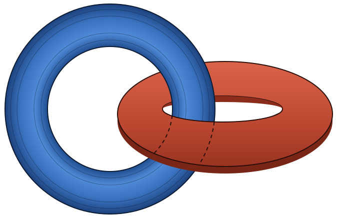

Hello world! I am Valentin
I am Valentin Benedetti, I am a theoretical physicist interested in Quantum Field Theory, and Quantum Information. Nowadays, particularly, in the interplay between Generalized Symmetries, Entanglement and Magic.
Currently I am a postdoctoral fellow at the Abdus Salam International Centre for Theoretical Physics in the HECAP section. Before, I obtained my Ph.D. from Instituto Balseiro.
You can find me in vbenedet@ictp.it

Recent papers
-
2026
Universality of Magic in Local Quantum Field Theory
-
2026
Non-invertible symmetries and selection rules for RG flows of coset models
-
2026
Jones index from Rényi entropies in the Ising conformal field theory